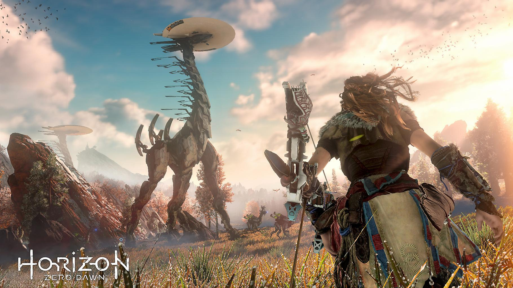
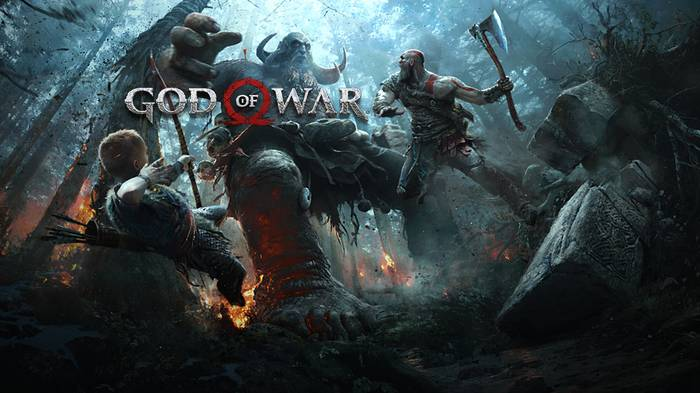
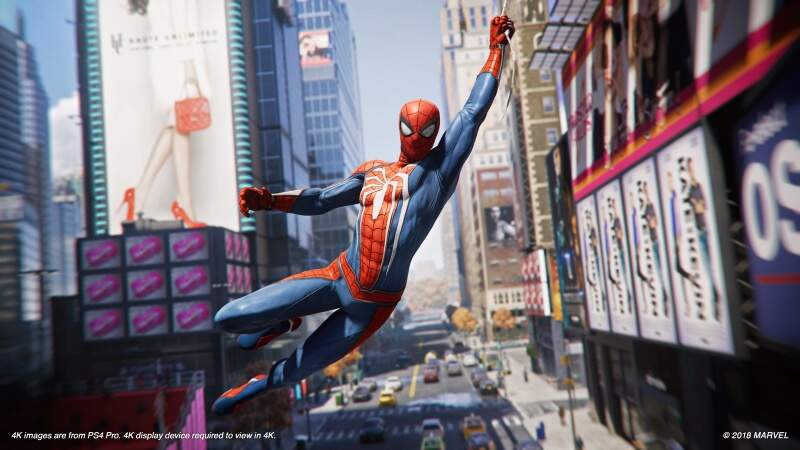

Built Using bootstrap

Players take control of Aloy, a hunter who ventures through a post-apocalyptic land ruled by robotic creatures. Aloy can kill enemies in a variety of ways – setting traps such as tripwires using the Tripcaster, shooting them with arrows, using explosives, and a spear. Machine components, including electricity and the metal they are composed of, are vital to Aloy's survival; she can loot their remains for crafting resources

The player controls the character Kratos in combo-based combat and puzzle game elements. The gameplay is vastly different from previous games, as it was completely rebuilt. A major change is that Kratos no longer uses his signature double-chained blades, the Blades of Chaos, as his default weapon.

The primary playable character is the superhero Spider-Man, who can navigate the world by jumping, using his Web Shooters to fire webs that allow him to swing between buildings, running along walls and automatically vaulting over obstacles. The player can precisely aim webs to pull himself towards specific points.
The console's origins date back to 1988 where it was originally a joint project between Nintendo and Sony to create a CD-ROM for the Super Famicom. Although Nintendo denied the existence of the Sony deal as late as March 1991, Sony revealed a Super Famicom with a built-in CD-ROM drive, that incorporated Green Book technology or CD-i, called "Play Station" (also known as SNES-CD) at the Consumer Electronics Show in June 1991. However, a day after the announcement at CES, Nintendo announced that it would be breaking its partnership with Sony, opting to go with Philips instead but using the same technology. The deal was broken by Nintendo after they were unable to come to an agreement on how revenue would be split between the two companies. The breaking of the partnership infuriated Sony President Norio Ohga, who responded by appointing Kutaragi with the responsibility of developing the PlayStation project to rival Nintendo.
In the last decade the domination of PS4 was regularly questioned,but now,owning all those exclusives they are the true leaders of this industry. I found a video that shows pretty good why PS4 is the best console